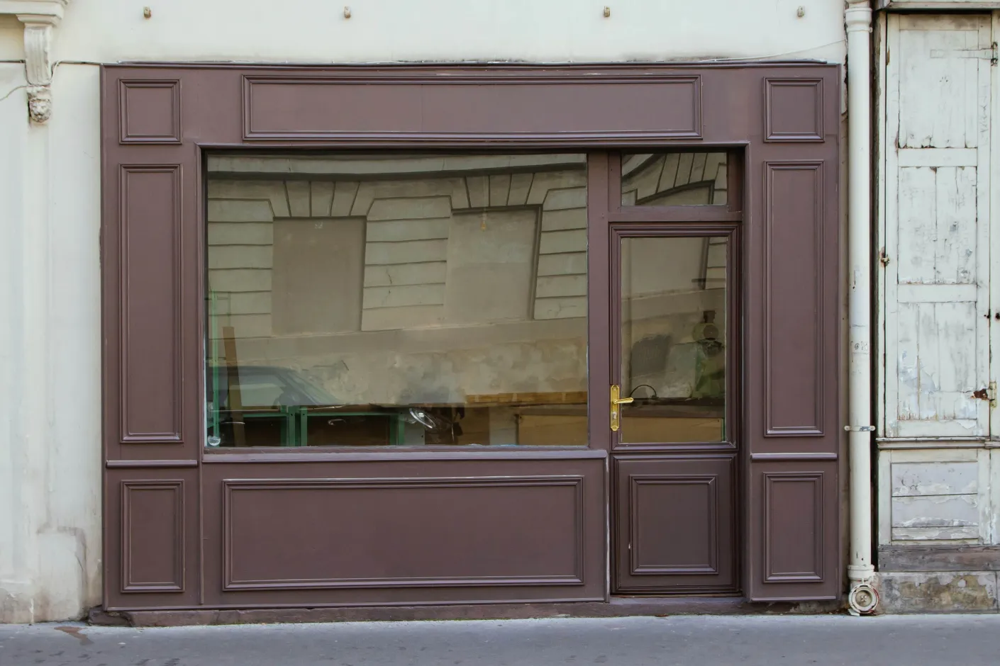

住所
〒150ｰ0001
東京都渋谷区神宮前3丁目1-25
近隣の駅
外苑前駅（東京メトロ銀座線）
-徒歩5分
表参道駅
（東京銀座線／
東京メトロ千代田線／
東京メトロ半蔵門線）
-徒歩7分
明治神宮前駅
（東京メトロ副都心線／
東京メトロ千代田線）
-徒歩13分
| 営業時間 |
09:00 - 18:00 ※営業時間は変更となる場合がございます。 |
|---|---|
| 定休日 | 水曜日 |
| 座席数 |
カウンター: 12席 テーブル : 8席 ※テラス席あり ※テラス席のみペット同伴可 |
| 予約システム | なし |
| 支払い方法 |
現金、クレジット、 QRコード 対応 |
| その他 |
WI-FI有 コンセント有（一部席） |
※営業時間は変更となる場合がございます。
※テラス席あり
※テラス席のみペット同伴可
